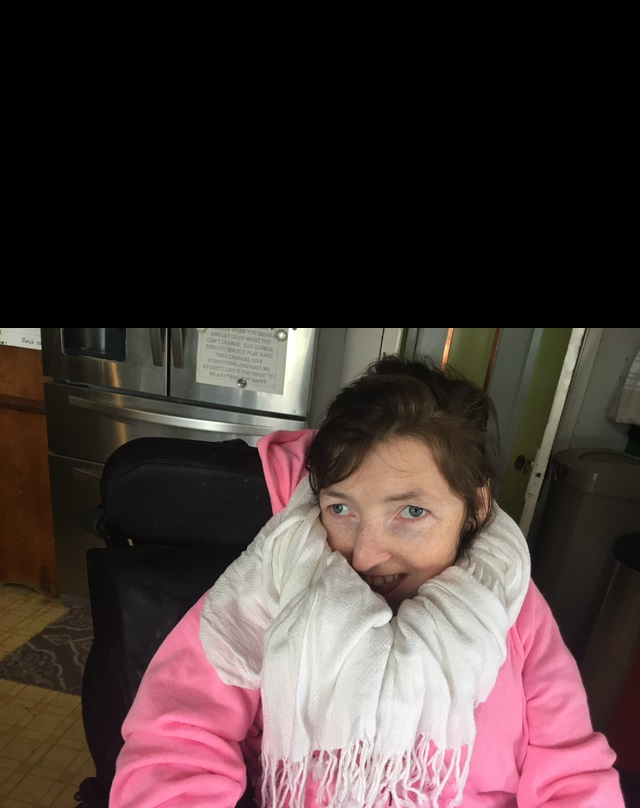
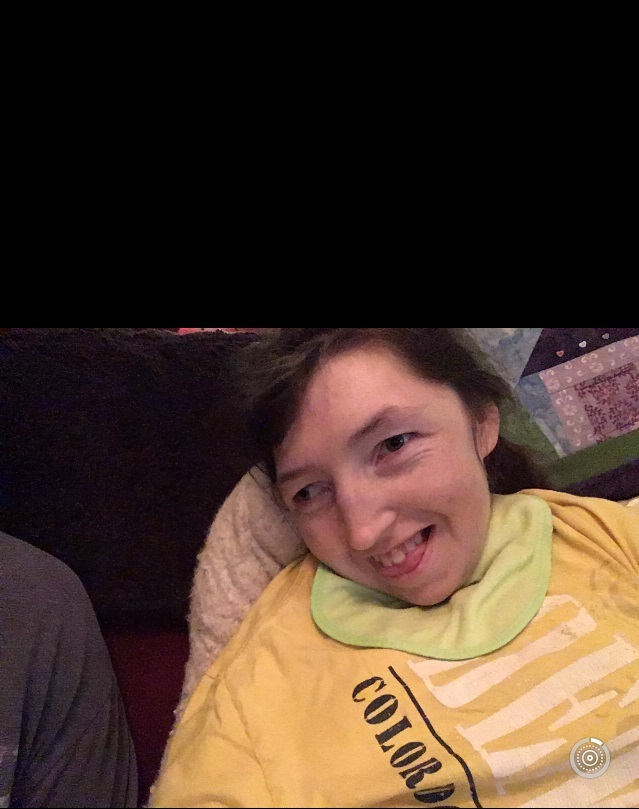
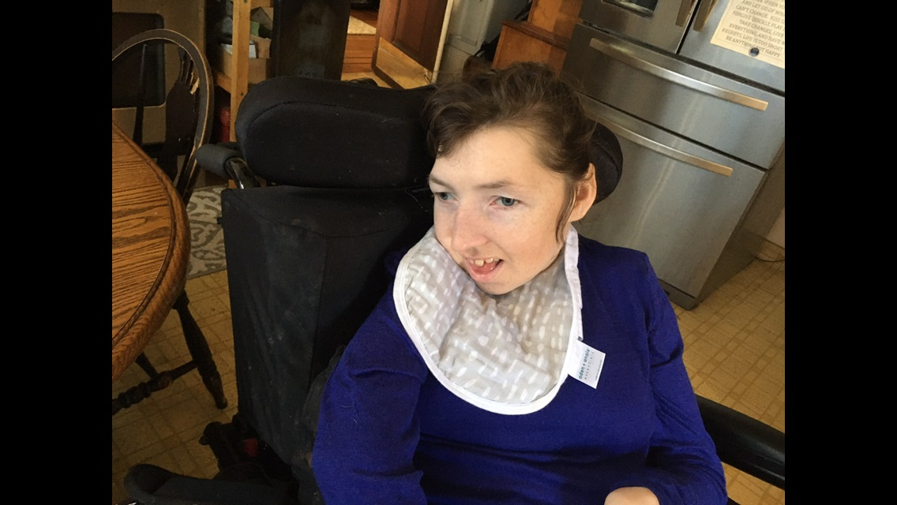
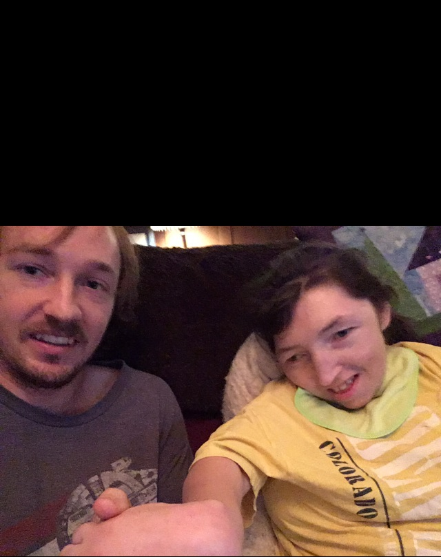

So this website is about my little sister, Miranda. The story is a happy one, I promise, though it might make you cry.

Big smile.
Currently (4/18/2021) we are both about to have birthdays. Myself on May 11th and my sister on June 24th. I will be turning 26 and she will
be turning 24. She has been disabled since birth. Mentally she is not disabled, physically, though, she has a lot of disabilities. When she
was in the womb, nothing was wrong with her. When my mom gave birth to her, the umbilical chord got wrapped around her neck 3 times. The
doctors there were basically completely responsible for preventing any damage to come to her from this, or have prevented it. There was a
lawsuit afterwards and my parents have gotten free nursing for my sister for her entire life as well as the State covering other expenses
for her.

...Haha another big smile.
On a brighter note- After she turned 2, my parents and I started seeing that she was a very mature child and also far happier than probably
99% of the people in the world- regardless of her disabilities. I'm her brother so you might say I am biased, but she has become very
beautiful. Where does her happiness come from? I'm going to say because she has a heart of gold. She is honestly quite an inspiration to
pretty much everybody that has met her. Good parents might be part of it.

Not really smiling, but looks happy.
She can't walk or speak english, though we are certain she knows how to read and understand what we say. If we ask her something she will
blink once for yes and twice for no. She squeals very loudly when she is happy. She did that just randomly when we were on an airplane one
time. She often cries when she isn't happy. Not super sad, more just to communicate she isn't comfortable.

Miranda and her brother Jordan (the author)
To wrap up the story, she is basically a reason to think that if you live comfortably and you think you aren't good enough or aren't rich
enough, or can't live the life you want, that sorry, you are wrong. You can have the life you want.
Lilliworks is my parent's nonprofit company that makes tools for kids with disabilities to learn with. Since traditional learning may
not make sense. If you are interested in learning about a good cause.